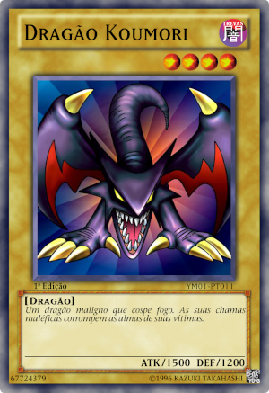

Site oficial:

Um monstro touro geralmente encontrado em florestas, ele ataca monstros inimigos com um par de chifres mortais.
Download da carta.zip

Um dragrão maligno que cospe fogo. As suas chamas maléficas corrompem as almas de suas vítimas.

O mago supremo em termos de ataque e defesa.
Site oficial: